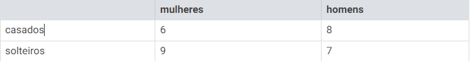

ATIVIDADES
1- (Enem) Em uma central de atendimento, 100 pessoas receberam senhas numeradas de 1 até 100. Uma das senhas é sorteada ao acaso.
Qual é a probabilidade de a senha sorteada ser um número de 1 a 20?
2- Em uma caixa, há 16 fichas numeradas de 1 a 16. Uma ficha será sorteada aleatoriamente. Qual a probabilidade de o número da ficha sorteada ser maior ou igual a 12?
3- Se lançarmos um dado, qual a probabilidade de obtermos um número maior que 4?
4- Um restaurante está com 13 pessoas: 9 clientes e 4 garçons. Se escolhermos uma pessoa do local aleatoriamente, qual a probabilidade de ser um cliente?
5- Se você escolher aleatoriamente uma letra no alfabeto, qual a probabilidade de selecionar uma vogal?
6-Se é escolhido aleatoriamente um número da sequência (2, 3, 5, 7, 11, 13, 17, 19) qual a probabilidade de escolher um número primo?
7-Se uma turma é formada por 8 alunos do sexo feminino e 7 do sexo masculino e a professora escolher aleatoriamente um estudante para ir ao quadro resolver um exercício, qual a probabilidade de ser selecionada uma aluna?
8-Escolhendo aleatoriamente um dia da semana, qual a probabilidade de escolher uma segunda ou uma sexta-feira?
9-Em um ônibus de excursão há:

Um sorteio será realizado com o grupo de turistas que estavam no passeio. Qual a probabilidade de ser sorteada uma mulher casada?
10-Ao lançar um dado não viciado, qual a probabilidade de sair um número maior que 4?